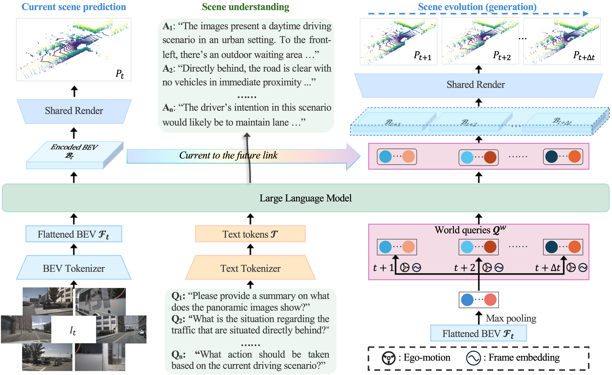

Xin Zhou
Wuhan, Hubei, China
About Me
I am a first-year Ph.D. student at Huazhong University of Science and Technology, under the supervision of Prof. Xiang Bai. My research interests mainly lie in 3D vision, especially in 3D understanding and generative models.
Research Interests
- 3D Vision/Autonomous Driving/Embodied AI: 3D perception, point cloud analysis, 3D generation
- Generative Models: world model for autonomous driving and general scenes
News
- [Oct. 2025] Selected as the Top Reviewer at NeurIPS 2025.
- [Sep. 2025] One paper is accepted to NeurIPS 2025.
- [Jul. 2025] One paper is accepted to TPAMI 2025.
- [Jul. 2025] We release a training-free diffusion acceleration framework, now natively integrated into ComfyUI.
- [Jun. 2025] Finally achieve the bachelor's degree.
- [Jun. 2025] HERMES is accepted to ICCV 2025.
- [Apr. 2025] We win the 2-nd place in the SoccerNet Monocular Depth Estimation Challenges (CVPR 2025).
- [Feb. 2025] One paper is accepted to CVPR 2025.
- [Sep. 2024] Two papers are accepted to NeurIPS 2024.
- [Sep. 2024] We win the 1-st place in the FishNet Classification Challenge (ECCV 2024).
- [Apr. 2024] Invited to give a talk at FALML 2024.
- [Feb. 2024] One paper is accepted to CVPR 2024!
- [Jan. 2024] I will keep updating a collection of World Models , check it out and give a star🌟!
- [Aug. 2023] One paper is accepted to PRCV 2023.
Selected Publications (Full List)
(* Equal contribution)-
 ICCV'25A unified driving world model enabling joint multi-view understanding and future lidar generation.
-
 TPAMI'25
A spectral domain perspective for point PEFT, very strong performance.
TPAMI'25
A spectral domain perspective for point PEFT, very strong performance. -
CVPR'24Introduce Dynamic Adapter with prompt tuning in point PEFT.
-
 NeurIPS'24
A simple state space model tailored for point cloud analysis.
NeurIPS'24
A simple state space model tailored for point cloud analysis. -
 NeurIPS'24
A unified framework for across six 3D segmentation tasks.
NeurIPS'24
A unified framework for across six 3D segmentation tasks.
Seclected Experience
Participated Projects
- National Undergraduate Training Projects for Innovation and Entrepreneurship
- 2023-2024, 20,000￥ (~2,750 $). (As the host; Rated Excellent)
- 2024-2025, 10,000￥ (~1,375 $). (As a member; Rated Excellent) - Taihu Lake Innovation Fund for Future Technology (200,000￥, ~27,500 $), 2023-2025. (As a student member)
- HUST Undergraduate Natural Science Innovation Fund Program, (50,000￥, ~6,900 $), 2024-2025. (As the host)
Academic Service
- Conference Reviewer:
- 2026: CVPR, AAAI, WACV
- 2025: ICCV, ICML, ICLR, NeurIPS
- 2024: NeurIPS, ECCV, ICRA, ACCV
- Journal Reviewer:
- TPAMI, IJCV, SCIS, PR, RA-L, IJDE
Powered by Jekyll and Minimal Light theme.